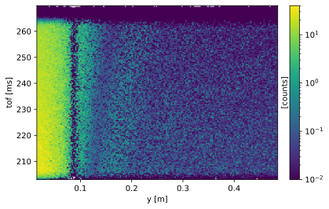
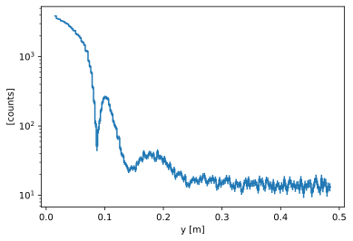
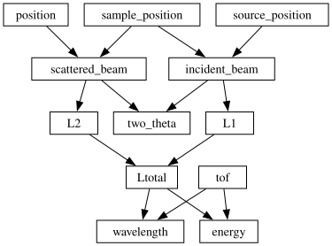
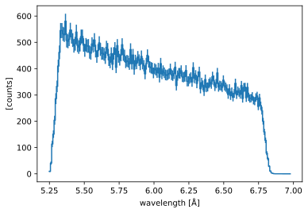
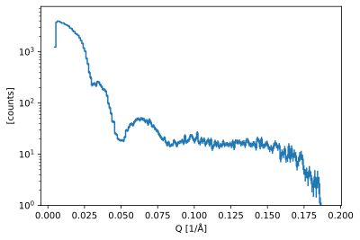
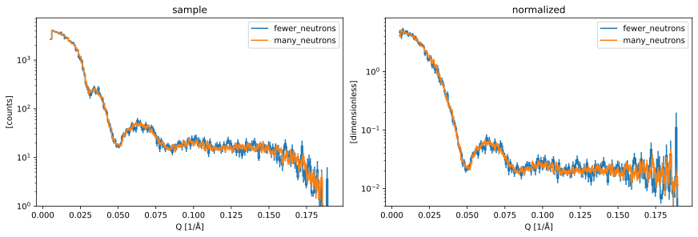

SANS data reduction#
This notebook will guide you through the data reduction for the SANS experiment that you simulated with McStas yesterday.
The following is a basic outline of what this notebook will cover:
Loading the NeXus files that contain the data
Inspect/visualize the data contents
How to convert the raw
time-of-flightcoordinate to something more useful (\(\lambda\), \(Q\), …)Normalize to a flat field run
Write the results to file
import numpy as np
import scipp as sc
import plopp as pp
import sans_utils as utils
Process the run with a sample#
Load the NeXus file data#
folder = "../3-mcstas/SANS_with_sample_many_neutrons"
sample = utils.load_sans(folder)
The first way to inspect the data is to view the HTML representation of the loaded object.
Try to explore what is inside the data, and familiarize yourself with the different sections (Dimensions, Coordinates, Data).
sample
- event: 21731426
- position(event)vector3m[0. 0.19614299 3. ], [0. 0.19427466 3. ], ..., [0. 0.33691953 3. ], [0. 0.34584927 3. ]
Values:
array([[0. , 0.19614299, 3. ], [0. , 0.19427466, 3. ], [0. , 0.19771328, 3. ], ..., [0. , 0.33713529, 3. ], [0. , 0.33691953, 3. ], [0. , 0.34584927, 3. ]]) - sample_position()vector3m[0. 0. 0.]
Values:
array([0., 0., 0.]) - source_position()vector3m[ 0. 0. -150.]
Values:
array([ 0., 0., -150.]) - tof(event)float64ms248.566, 248.574, ..., 215.398, 215.415
Values:
array([248.56633684, 248.57370691, 248.57997431, ..., 215.39625953, 215.3976337 , 215.4152348 ]) - x(event)float64m0.0, 0.0, ..., 0.0, 0.0
Values:
array([0., 0., 0., ..., 0., 0., 0.]) - y(event)float64m0.196, 0.194, ..., 0.337, 0.346
Values:
array([0.19614299, 0.19427466, 0.19771328, ..., 0.33713529, 0.33691953, 0.34584927])
- (event)float64counts1.074e-13, 9.326e-18, ..., 1.295e-87, 1.266e-91σ = 1.074e-13, 9.326e-18, ..., 1.295e-87, 1.266e-91
Values:
array([1.07392783e-13, 9.32649517e-18, 8.09956774e-22, ..., 1.32423144e-83, 1.29481538e-87, 1.26605277e-91])
Variances (σ²):
array([1.15332098e-026, 8.69835122e-035, 6.56029976e-043, ..., 1.75358891e-166, 1.67654688e-174, 1.60288961e-182])
Visualize the data#
Here is a 2D visualization of the neutron counts, histogrammed along the tof and y dimensions:
sample.hist(tof=200, y=200).plot(norm="log", vmin=1.0e-2)

Histogramming along y only gives a 1D plot:
sample.hist(y=200).plot(norm="log")

Coordinate transformations#
The first step in the data reduction is to convert the raw event coordinates (position, time-of-flight) to something physically meaningful such as wavelength (\(\lambda\)) or momentum transfer (\(Q\)).
Scipp has a dedicated method for this called transform_coords (see docs here).
We begin with a standard graph which describes how to compute e.g. the wavelength from the other coordinates in the raw data.
from scippneutron.conversion.graph.beamline import beamline
from scippneutron.conversion.graph.tof import kinematic
graph = {**beamline(scatter=True), **kinematic("tof")}
sc.show_graph(graph, simplified=True)

To compute the wavelength of all the events, we simply call transform_coords on our loaded data,
requesting the name of the coordinate we want in the output ("wavelength"),
as well as providing it the graph to be used to compute it (i.e. the one we defined just above).
This yields
sample_wav = sample.transform_coords("wavelength", graph=graph)
sample_wav
- event: 21731426
- L1()float64m150.0
Values:
array(150.) - L2(event)float64m3.006, 3.006, ..., 3.019, 3.020
Values:
array([3.00640517, 3.00628386, 3.00650803, ..., 3.01888393, 3.01885985, 3.01986949]) - Ltotal(event)float64m153.006, 153.006, ..., 153.019, 153.020
Values:
array([153.00640517, 153.00628386, 153.00650803, ..., 153.01888393, 153.01885985, 153.01986949]) - incident_beam()vector3m[ 0. 0. 150.]
Values:
array([ 0., 0., 150.]) - position(event)vector3m[0. 0.19614299 3. ], [0. 0.19427466 3. ], ..., [0. 0.33691953 3. ], [0. 0.34584927 3. ]
Values:
array([[0. , 0.19614299, 3. ], [0. , 0.19427466, 3. ], [0. , 0.19771328, 3. ], ..., [0. , 0.33713529, 3. ], [0. , 0.33691953, 3. ], [0. , 0.34584927, 3. ]]) - sample_position()vector3m[0. 0. 0.]
Values:
array([0., 0., 0.]) - scattered_beam(event)vector3m[0. 0.19614299 3. ], [0. 0.19427466 3. ], ..., [0. 0.33691953 3. ], [0. 0.34584927 3. ]
Values:
array([[0. , 0.19614299, 3. ], [0. , 0.19427466, 3. ], [0. , 0.19771328, 3. ], ..., [0. , 0.33713529, 3. ], [0. , 0.33691953, 3. ], [0. , 0.34584927, 3. ]]) - source_position()vector3m[ 0. 0. -150.]
Values:
array([ 0., 0., -150.]) - tof(event)float64ms248.566, 248.574, ..., 215.398, 215.415
Values:
array([248.56633684, 248.57370691, 248.57997431, ..., 215.39625953, 215.3976337 , 215.4152348 ]) - wavelength(event)float64Å6.427, 6.427, ..., 5.569, 5.569
Values:
array([6.42676939, 6.42696504, 6.42711767, ..., 5.5686913 , 5.5687277 , 5.569146 ]) - x(event)float64m0.0, 0.0, ..., 0.0, 0.0
Values:
array([0., 0., 0., ..., 0., 0., 0.]) - y(event)float64m0.196, 0.194, ..., 0.337, 0.346
Values:
array([0.19614299, 0.19427466, 0.19771328, ..., 0.33713529, 0.33691953, 0.34584927])
- (event)float64counts1.074e-13, 9.326e-18, ..., 1.295e-87, 1.266e-91σ = 1.074e-13, 9.326e-18, ..., 1.295e-87, 1.266e-91
Values:
array([1.07392783e-13, 9.32649517e-18, 8.09956774e-22, ..., 1.32423144e-83, 1.29481538e-87, 1.26605277e-91])
Variances (σ²):
array([1.15332098e-026, 8.69835122e-035, 6.56029976e-043, ..., 1.75358891e-166, 1.67654688e-174, 1.60288961e-182])
The result has a wavelength coordinate. We can also plot the result:
sample_wav.hist(wavelength=200).plot()

We can see that the range of observed wavelengths agrees with the range set in the McStas model (5.25 - 6.75 Å)
Exercise 1: convert raw data to \(Q\)#
Instead of wavelength as in the example above, the task is now to convert the raw data to momentum-transfer \(Q\).
The transformation graph is missing the computation for \(Q\) so you will have to add it in yourself. As a reminder, \(Q\) is computed as follows
You have to:
create a function that computes \(Q\)
add it to the graph
call
transform_coordsusing the new graph
Note that the graph already contains the necessary components to compute the scattering angle \(2 \theta\) (called two_theta in code).
Solution:
Histogram the data in \(Q\)#
The final step in processing the sample run is to histogram the data into \(Q\) bins.
sample_h = sample_q.hist(Q=200)
sample_h.plot(norm="log", vmin=1)

Exercise 2: process flat-field run#
Repeat the step carried out above for the run that contained no sample (also known as a “flat-field” run).
folder = "../3-mcstas/SANS_without_sample_many_neutrons"
Solution:
Bonus question: can you explain why the counts in the flat-field data drop at high \(Q\)?
Exercise 3: Normalize the sample run#
The flat-field run is giving a measure of the efficiency of each detector pixel. This efficiency now needs to be used to correct the counts in the sample run to yield a realistic \(I(Q)\) profile.
In particular, this should remove any unwanted artifacts in the data, such as the drop in counts around 0.03 Å-1 due to the air bubble inside the detector tube.
Normalizing is essentially just dividing the sample run by the flat field run.
Hint: you may run into an error like "Mismatch in coordinate 'Q'". Why is this happening? How can you get around it?
Solution:
normed.plot(norm="log", vmin=1.0e-3, vmax=10.0)
Save result to disk#
Finally, we need to save our results to disk, so that the reduced data can be forwarded to the next step in the pipeline (data analysis).
We will use a simple text file for this:
from scippneutron.io import save_xye
# The simple file format does not support bin-edge coordinates.
# So we convert to bin-centers first.
data = normed.copy()
data.coords["Q"] = sc.midpoints(data.coords["Q"])
save_xye("sans_iofq.dat", data)
Bonus exercise#
Re-run the reduction using the results from the simulations with less neutrons, and compare the results.
Solution:
